Helen’s sister, a bookkeeper, who lived with her mother and Helen in 1950. She married twice and was a witness at Anthony and Helen’s wedding.
Evelyn Saydah: Bay Ridge High School yearbook "Maroon and White", 1938, p.98, the left photograph of the row that begins with her name. Probably her: the photographs sit between two columns of names and are paired with the names by row.

- Born
- 2 February 1920 Confirmed
- Married
- Eli Zrake, 3 January 1954 Confirmed
- Later married
- Leonard F. Deschner, 1971 (index entry; certificate not yet seen) Probable
- Died
- 19 December 2001 Confirmed
- Parents
- Antoon (Anton) Saydah and Wassela Hadad Saydah Confirmed
- Sisters
- Helen Saydah and Virginia Saydah Hakim Confirmed
Spellings in the records: Mrs. Zrake, then Mrs. Deschner; Hadad on her Social Security record (her mother’s name).
Read the full story All the people
Documents about Evelyn Saydah
 Document 4The 1950 census, Kings County
Document 4The 1950 census, Kings County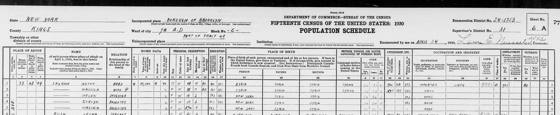
Document 26The 1930 census, Brooklyn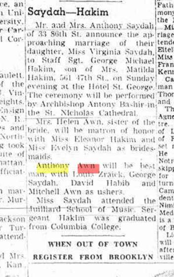
Document 39Virginia Saydah's engagement, 2 May 1945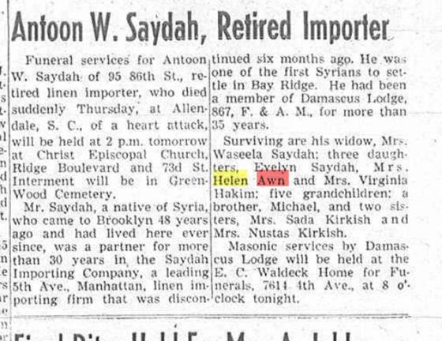
Document 40Anton's obituary, 20 November 1949 Document 45A sympathy note for Wassela, 17 January 1969
Document 45A sympathy note for Wassela, 17 January 1969 Document 77Eli Zrake and Evelyn Saydah are married (January 1954)
Document 77Eli Zrake and Evelyn Saydah are married (January 1954)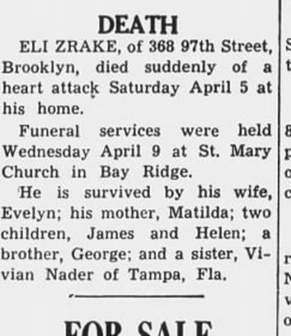
Document 78Eli Zrake dies suddenly (April 1958)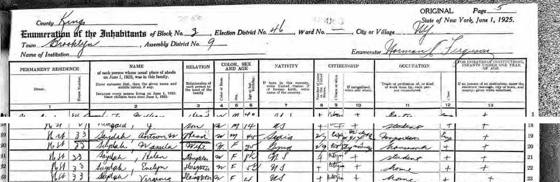
Document 1031925 New York State census: Anton's household Document 128Evelyn Z. Deschner, paid death notice, 2001
Document 128Evelyn Z. Deschner, paid death notice, 2001 Document 129Anton and Wassela with their three daughters
Document 129Anton and Wassela with their three daughters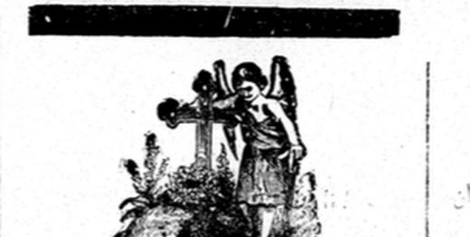
Document 152Antoon's family notice, As-Sameer, 21 November 1949 Documents pageNew York birth index, 1920: "Evelyn Saydak" (Helen's sister)
Documents pageNew York birth index, 1920: "Evelyn Saydak" (Helen's sister) Documents pageBay Ridge High School yearbook, 1938: Evelyn Saydah (Helen's sister)Documents pageMarriage license index, 1953: Evelyn Saydah and Elias Zrake (Helen's sister)Documents pageMarriage license index, Manhattan, 1971: Evelyn Zrake and Leonard Deschner (Helen's sister)Documents pageSocial Security application index: Evelyn Saydah, Zrake, Deschner (Helen's sister)Documents pageMira'at al-Gharb, 11 May 1945, p.4: report of the wedding (Helen's sister)Documents pageAs-Sameer, 10 May 1951, p.5: "The brilliant wedding" (Helen's sister)Documents pageAs-Sameer, 3 January 1941, p.3: "A blessed wedding crown"Documents pageAl-Hoda, 3 January 1941, p.3: "Aoun-Saydah wedding"
Documents pageBay Ridge High School yearbook, 1938: Evelyn Saydah (Helen's sister)Documents pageMarriage license index, 1953: Evelyn Saydah and Elias Zrake (Helen's sister)Documents pageMarriage license index, Manhattan, 1971: Evelyn Zrake and Leonard Deschner (Helen's sister)Documents pageSocial Security application index: Evelyn Saydah, Zrake, Deschner (Helen's sister)Documents pageMira'at al-Gharb, 11 May 1945, p.4: report of the wedding (Helen's sister)Documents pageAs-Sameer, 10 May 1951, p.5: "The brilliant wedding" (Helen's sister)Documents pageAs-Sameer, 3 January 1941, p.3: "A blessed wedding crown"Documents pageAl-Hoda, 3 January 1941, p.3: "Aoun-Saydah wedding" Documents pageThe 1950 census: the Awn household at 95 86th Street
Documents pageThe 1950 census: the Awn household at 95 86th Street Documents pageHelen in the 1940 and 1950 censuses
Documents pageHelen in the 1940 and 1950 censusesRecords of her first husband, Eli Zrake
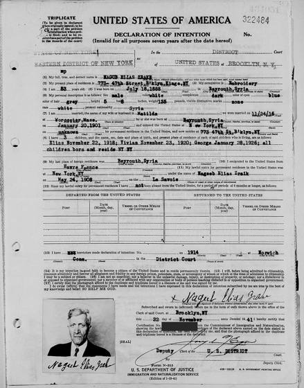
Document 85Najeeb Zrake's declaration of intention, 22 November 1941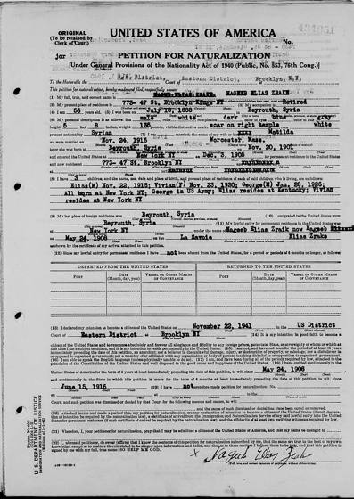
Document 86Najeeb Zrake's petition for naturalization, 1945 Document 87The Zrake household in the 1940 census
Document 87The Zrake household in the 1940 census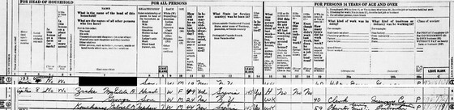
Document 117The Zrake household, 1950 censusRecords of her second husband, Leonard Deschner
 Documents page1920 census: Nicholas Deschner's household, Cornelia Street, Ridgewood (Leonard Deschner's family)
Documents page1920 census: Nicholas Deschner's household, Cornelia Street, Ridgewood (Leonard Deschner's family)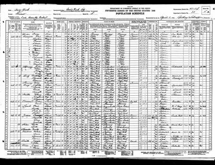
Documents page1930 census: the Deschner household, 6079 60th Road, Queens (Leonard Deschner's family)Documents pageMarriage license index, Brooklyn, 13 Oct 1932: Leonard F Deschner and his brideDocuments pageFamilySearch marriage index: Leonard Deschner and his bride, 22 October 1932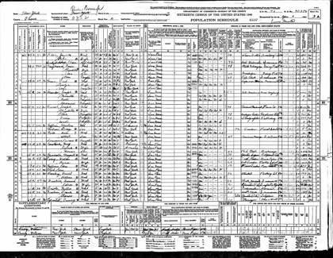
Documents page1940 census: Leonard Deschner and his wife, Grandview Avenue, Queens (probably Evelyn's second husband)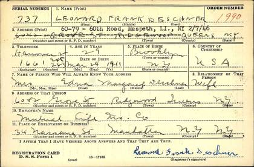
Documents pageLeonard Frank Deschner's World War II draft card, front and back, and index entry Documents page1950 census: Leonard Deschner and his wife, 65-23 70th Ave, Queens (probably Evelyn's second husband)Documents pageConnecticut death index: Leonard F Deschner, died 2003 (probably Evelyn's second husband)Documents pageSocial Security Death Index: Leonard F. Deschner, died 2003 (probably Evelyn's second husband)
Documents page1950 census: Leonard Deschner and his wife, 65-23 70th Ave, Queens (probably Evelyn's second husband)Documents pageConnecticut death index: Leonard F Deschner, died 2003 (probably Evelyn's second husband)Documents pageSocial Security Death Index: Leonard F. Deschner, died 2003 (probably Evelyn's second husband)Each fact carries its label: Confirmed (shown in a record), Family (told to us) or Probable (fits but unproven). Living relatives are not listed.